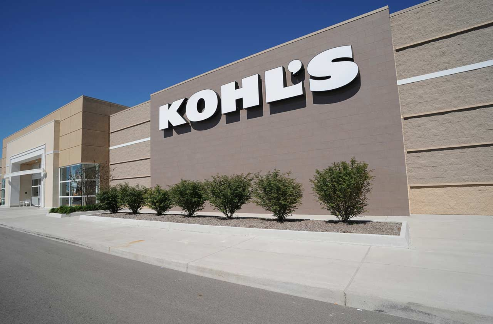
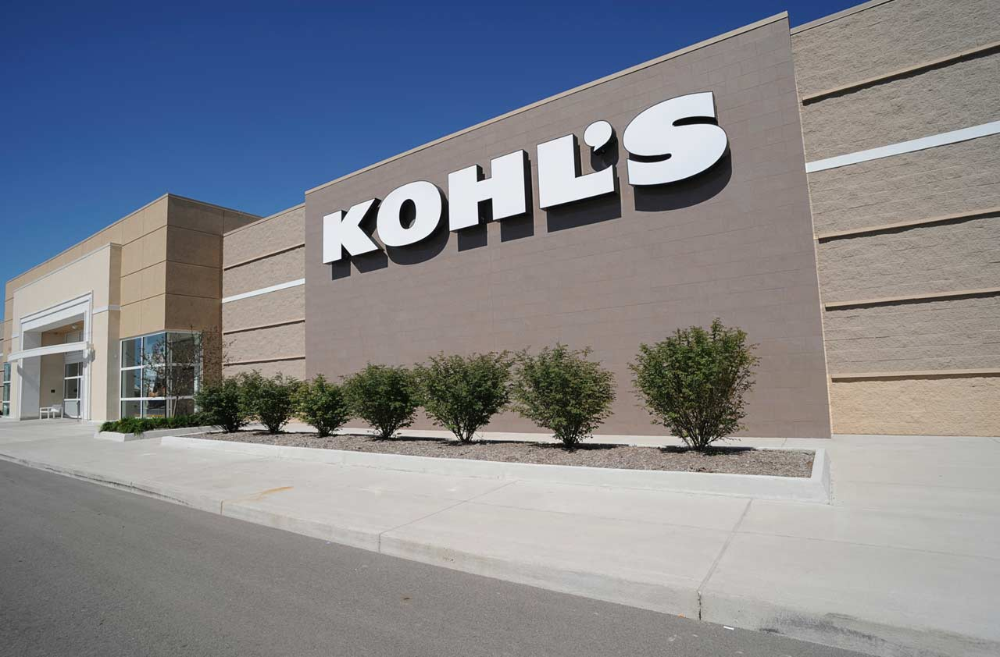

Aamna Zia
I am Aamna Zia a student at the University of California Riverside. I study Psychology and currently taking my required classes to do so. Outside of school I am taking Certified Nursinng Assistant classes to gain more expirience in the medical field. My hobbies include watching movies, spending time with my family, and hanging out with friends. One thing I would love to do is travel more often.I love visiting new places and learning different cultures. Going out to eat and try new places is my hobby.
I have a strong work ethic. I am very enthusiastic and dedicated to my work. My past expiriences have taught me a lot. I worked in a Medical Supply Center. This job taught me how to handle inventory of all medical supplies through Excel spreadsheet.I learned how to prioritize shipment changes and assemble deliery packages at a moments notice. I am very well expirienced in clinical data and medical supplies. My next job was Khols Department Store. I learned how to operate a cash register to process cash, check, and credit card transactions. I computed sale prices and total purchases. I am very expirienced with customer service and operating a cash register. here
Throughout my life I volunteered at many places. I first volunteered at the local public library. I tutored kids from the age of 5-17 years old. I helped them with their academic difficulties and educated them more on the subjects they were stuggling with.The next place I volunteered at was a hospital. I worked alongside members of patient care teams in different departments. I obtained routinely vital health records and helped patients with their needs. I had to assist nurses and physicians with direct bedside patient care.
Experience
Medical Supply Center
• Managed inventory of medical supplies
• Packaged deliveries
• Helped customers with their needs
Corona Regional Hospital
• Worked alongside with doctors and physicians
• Helped patients with their needs
• Did inventory in the medical supply room
Education
UC Riverside
University of California Riverside
Portfolio


